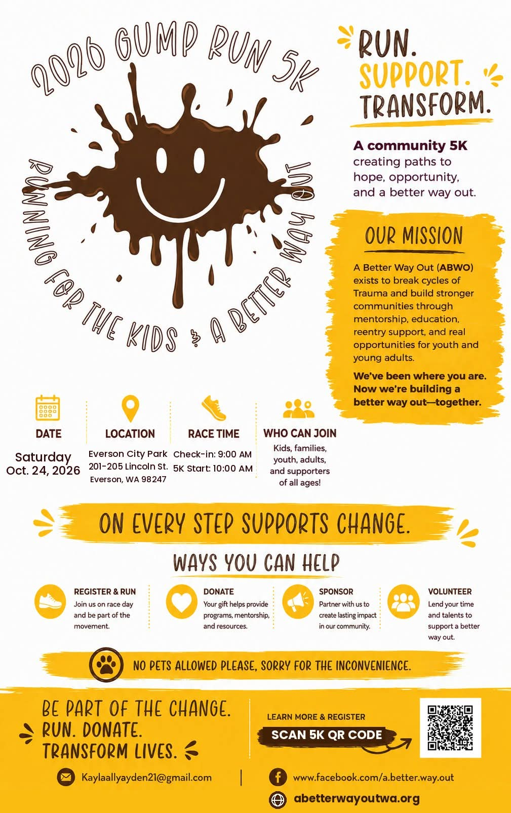
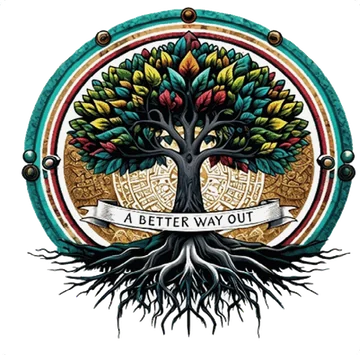

Events & activities
Community gatherings built to create connection, inspire hope, and bring real change.

Saturday, October 24
2026 Gump Run 5K — Running for the Kids & A Better Way Out
Lace up your shoes and join us for a fun run supporting the kids and the mission of A Better Way Out. Every step helps us provide mentorship, support, and hope to at-risk youth in our community.
Run. Support. Transform. Kids, families, youth, adults, and supporters of all ages are welcome. You can register and run, donate, sponsor, or volunteer — every step supports change.
- Where
- Everson City Park, 201–205 Lincoln St, Everson, WA 98247
- When
- Check-in 9:00 AM, 5K starts 10:00 AM
- Who
- All ages welcome
- Pets
- No pets, sorry for the inconvenience
- Register
- Scan the QR code on the flyer, or email Kaylaallyayden21@gmail.com
Updates are posted on our Facebook page.
Past events
Looking back at what we’ve done together: photos, videos, and highlights from previous gatherings.
20268 events
Walk with the next young person who needs a way out.
Give
Your donation goes straight into mentorship, outreach, and family support for young people in Whatcom County. Donations are tax-deductible.
Donate on ZeffyVolunteer
Serve at outreach days, staff a booth, or mentor. Message us on Facebook and we’ll tell you what’s coming up.
Message us on Facebook